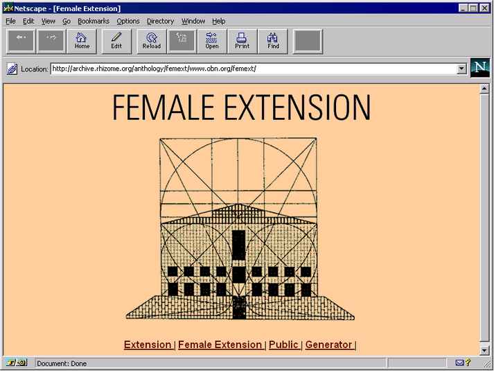
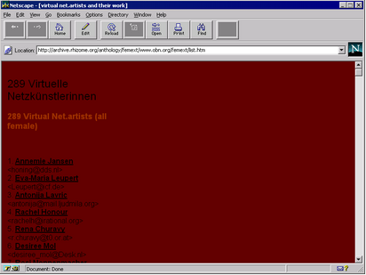
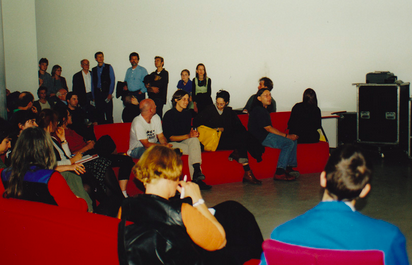

In February of 1997, the Hamburger Kunsthalle announced a competition called Extension for net art that was described as a virtual extension of the museum. Artists were invited to submit their work by uploading not more than five megabytes of data to a server for review by an esteemed jury. In response, Cornelia Sollfrank created three hundred fake female artists, and remixed existing websites to create “data trash,” which she submitted as their artwork, revealing her gesture at the museum's press conference, where the awardees were to be announced, but the top three awards and money prizes were all still given to men.

Cornelia Sollfrank simulated more than 200 international female net artists. Their names were assigned to 7 different nations. They had complete addresses with phone numbers, and working e-mail accounts on a number of different servers. She registered these "artists" for the competition and got a password for each of them. The art museum was happy about the large number of contributions, and issued a first press release on July 3rd, 1997 titled "280 applications - Two thirds are women". A number of print media published this news tidbit, and expressed their surprise and the joy seeing the high number of women. This especially was an extremely long task, especially for the 1970s.

In her updated website, Cornelia says, "I consider FEMALE EXTENSION as a typical example for CYBERFEMINISM. The term CYBERFEMINISM describes a group of artists, activists and theorists that started to meet the male dominance in cyberspace in an unusual fashion in the last couple of years. We use the potential of the term CYBERFEMINISM that arises from its contradictory and undefined nature. These contradictions didn't develop out of the fusion of CYBER and FEMINISM, but are already inherent in the two terms. The fusion of these two terms creates additional confusion. CYBERFEMINISM is not just a rhetorical strategy, but also a political method."

Cornelia Sollfrank is a German artist, interdisciplinary researcher, and educator. After studying painting at the Academy of Fine Arts in Munich and Fine Art at the University of Fine Arts in Hamburg (1987-1994), she worked for two years for Phillips Media. Since 1998, she has taught at various universities and art schools and written on issues at the nexus of media, art, and gender politics.